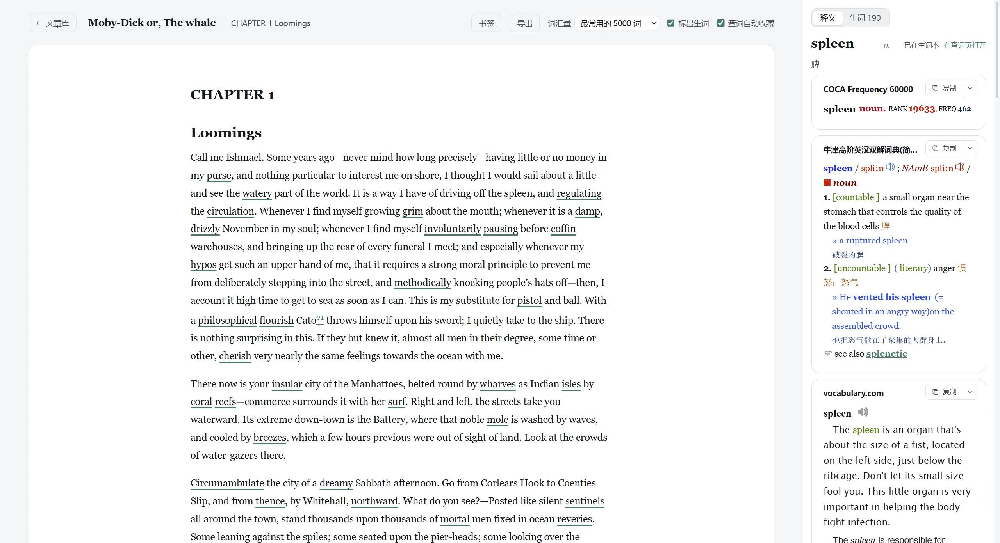
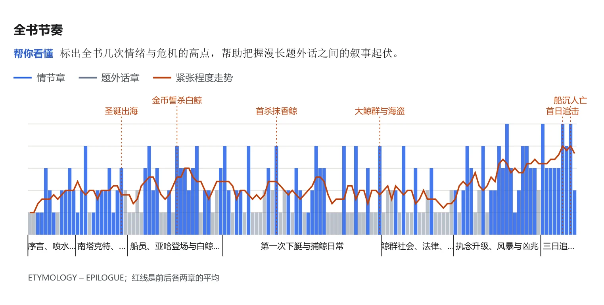
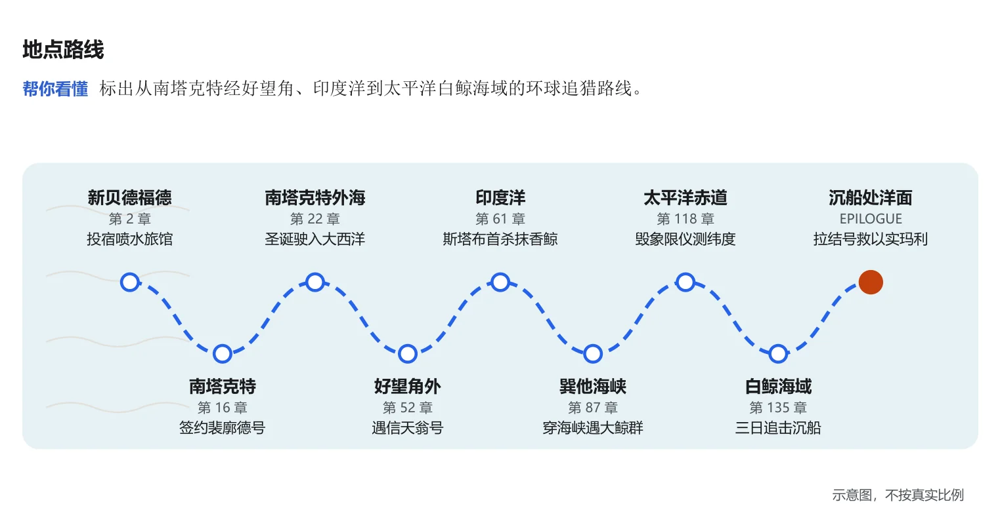
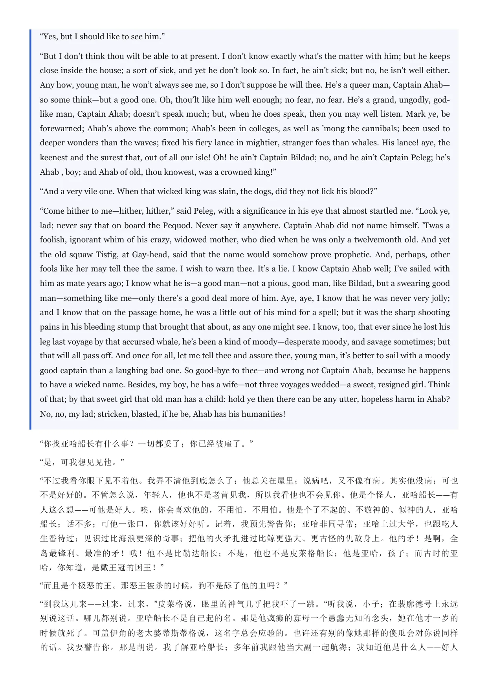
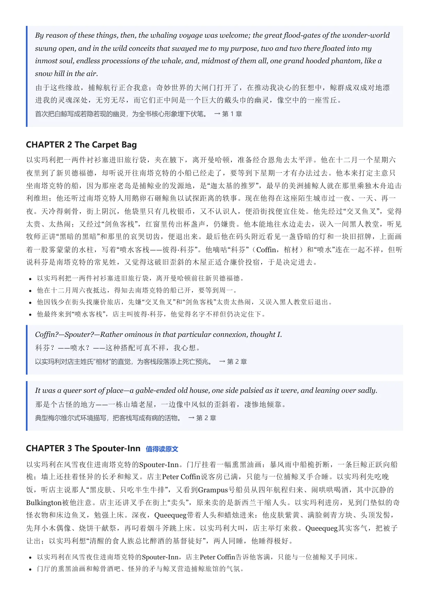

阅读
把英文原著读完，
这次有人陪你
把电子书和文章放进 Lens 里读：生词先标好，点词就查，查过的词带着原句自动收藏。读大部头之前，还能先拿到一本按章节排好的预习包；想更省力，让 AI 先替你通读一遍。
文章库与 EPUB 电子书

- 放进来的方式：粘贴文章、打开文件（.epub、.md、.txt）、拖进窗口，或在资源管理器里右击文件「用 Lens 打开」。
- 电子书：一次一章，点章节名打开目录；图片、脚注、尾注照常显示；书复制一份存进 Lens，原文件删了也不影响。
- 编码自动识别：UTF-8、UTF-16、GBK 的文本都能正确打开。
- 三栏：左边导航、中间正文、右边查词，两侧都能关掉只留正文；往下读时工具栏自动收起。
按你的词汇量，把生词标在正文上
选一个词汇量（最常用的 2000～20000 词），超过的词加下划线，已收藏的用虚线。改了立即重新标注；关掉后正文没有任何标记。词频用 COCA（导入过时），否则用内置的 wordfreq 词频表。
- 词形先还原再判断：eroded 按 erode 算，wages 按 wage 算。
- 句中大写开头的人名地名、全大写缩写不算生词。
生词页：一章有哪些生词，一眼看完

- 统计：总词数、不同的词、生词数、认识的比例。
- 每个词：词性、中文释义、出现次数、词频排名；按出现顺序或「难的在前」排。
- 批量处理：勾选后一键加入生词本（各自带文中第一次出现的句子），或标为认识。
- 导入认识的词表：选一个 txt / csv（四六级、考研词表都行），里面的词全部标为认识，生词标得更准；导错了可以清空。
- 释义从哪来：中文取你本地双解词典的第一段中文，鼠标停在释义上显示取自哪部词典；词频排名注明用的是 COCA 还是内置词频表。
点词就查，查过就收
- 点一个词在右栏查，拖选可以查短语；词典和顺序跟当前配置组。
- 右栏顶部的词头可以直接改：点到 depleted，旁边有「查原形 deplete」。
- 自动收藏（默认开）：查到的词连同所在句子收进生词本，来源记成书名。
- 上图里的 spleen：牛津高阶第二个义项「（文学）怒气」，正是《白鲸》开头这句的意思。
书签与阅读进度
每篇文章、每本书都记住读到哪一章哪个位置，下次打开回到原处。读到想回头看的地方，按 Ctrl+D 加个书签：名字取屏幕上第一段原文，注明第几章、百分之几，点一下跳过去，换章也行。
文章可以直接改
双击正文空白处进入编辑。默认所见即所得，像 Typora：输入「## 」变标题、「- 」变列表，Ctrl+B 加粗；也可以切到 Markdown 源码。保存后重新排版、重新统计生词，回到原来读到的位置。从文件导入的文章不会改动原文件。
导出带生词表的 PDF
前半是原文，标出的词在正文里编号；后半是词汇表，每个词带原形、词性、中文、文中原句，可选词典释义和音标。打印出来就是一份自己的精读讲义。
| 书页 | 下划线加上标编号，词汇表在文末另起一页 |
|---|---|
| 旁注 | 每段右边注出本段第一次出现的词（词性、中文），像课本的页边注 |
| 卡片 | 荧光笔式标注，词汇表排成卡片 |
全书预习包：读之前，先把整本书的生词过一遍
打开一本电子书 → 导出 → 全书预习包。Lens 把整本书扫一遍（《白鲸》22 万词，两秒多），列出你词汇量以外各有多少生词，看着数量再选。生成的 PDF 带书签，可以在手机或平板上读。


- 只算正文：自动跳过版权页、前言、注释、索引、书末附赠的书评，范围可以自己改。
- 挑最值得背的：可以限定数量，超过时留下书里出现次数最多的词；只出现一次的生僻词可以不要；人名地名不算。
- 两份词表：简明单词表（一行一个词，快速过一遍）和详细词表（带书中原句、词典释义、音标）。
- 按章节或按字母：按章节时每章列出这一章首次出现的词，边预习边读。
- 阅读路线表：每章词数、预计用时、新生词数、生词密度，一眼看出哪几章最难。
- 可同时收进生词本：带书中原句、以书名为标签，之后复习、导出 Anki。
- 章节认得准：Calibre 转出来的 epub 常把几章挤在一个文件里，Lens 会按书里的章号重新分章；OCR 把 10 认成「1O」这种错也能认出来。
精读本：让 AI 先替你通读一遍
预习包最前面可以放一篇读前导读（取自维基百科，免费；也可以让 AI 写）。愿意多花一点，再勾上精读本：AI 把整本书读完，写成一份能代替原书的分析。读完它，你能跟人聊这本书，被问到细节也答得上。整体结构参照 Adler《如何阅读一本书》的分析阅读。
先看全貌，再决定读哪几章
- 整体：一句话主旨、一段话梗概、一份三分钟就能讲完的口语稿，以及全书分几大部分。
- 阅读建议：每章标一档：值得读原文、可略读、可跳过，不标的就正常读；全书节奏图画出每一章的紧张程度。时间不够时，读「值得读」的那几章就抓住了要害。
图解：AI 看书选图
Lens 内置九种图：人物关系网、伏笔与情节线、等级树、家谱、地理路线、全书节奏、对照表、因果链、概念图。AI 根据书的类型挑三到六种，填好数据，Lens 排版成图印进 PDF。小说多半会选人物和情节，论述类的书会选因果和概念。






内容
- 人物与世界：人物卡（身份、经历、关键场景、一段代表性原文）、人物关系、时代与地点背景、术语表。
- 情节时间线和逐章复述：情节章每章三五百字的连贯叙述；每章在 PDF 里是一个书签，随时跳到想看的那一章。
- 名场面：挑出全书最重要的段落，原文配中文译文和前因后果。作者去世超过 70 年的公版书给整段原文，仍有版权的书只引短段，由程序按作者卒年自动判断。
- 主题与写作：主题、关键意象、写作手法，以及出版后的评价与争议。
- 对话准备：最可能被问到的二十个问题、常见误解、可以展开的话题、能随口引用的金句。
- 细节自测：三十道题，答案放在后面，测测自己是不是真的读懂了。
放心用
- 原文不会编造：精读本里引用的每一段原文，都在原书里逐字核对过；对不上的直接丢掉，并注明丢了几段。
- 先看价钱再决定：支持 DeepSeek 和 Claude，生成前先显示要发多少章、多少词和估计花费。用 DeepSeek 做整本《白鲸》实测约 4 元人民币（0.6 美元），二十分钟左右。
- 不怕中断：每一步都存档，中途停了或者断网了，下次从停下的地方接着做，做过的部分不重复收费。
- 自动兜底：输出太长被截断时自动拆小重做，网络出错自动重试。
- 完全可选：要你自己填 API Key、自己勾选才会调用。不勾的话，只生成免费的预习包。